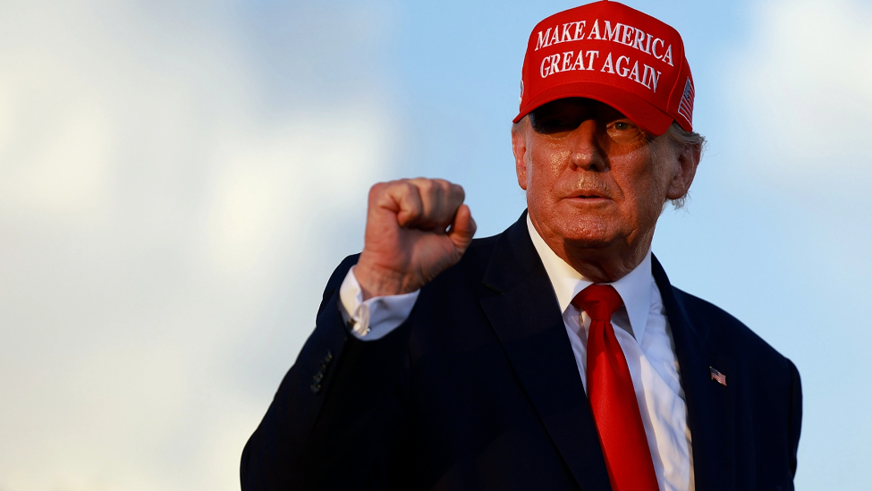

特朗普为什么下台？其实道理很简单，是因为美国国内国际的环境恶化，使美国的全球霸权面临崩溃，国内经济面临崩溃、阶级矛盾激化，导致美国资本集团不得不把特朗普赶下台，虽然特朗普满肚子的委屈和不满，甚至怨恨，但也不得不下台，被美国资本集团联合炒了鱿鱼。那么，为什么美国的国际国内环境骤然恶化呢？这都是特朗普的错误政策造成的。特朗普的错误政策的关键在两点：一是抗疫政策错误。二是反华政策错误。有朋友可能说，还有一个原因是特朗普的白人至上政策，其实，白人至上政策是美国的社会现实，体现在美国的法律和制度里面，只不过特朗普是把白人至上作为个人的政治筹码，以此构建铁杆粉丝群体。所以，种族主义不是特朗普的错，而是美国自建国以来就存在的痼疾，特朗普不过是利用这个捞取政治资本而已。朗普政府的抗疫失败，导致美国爆发疫情危机，疫情危机催生经济危机，经济危机又导致大量失业，大量失业才导致美国社会失控，最后在种族主义、白人至上的思想影响下，美国社会全面撕裂和对抗。黑人之死引发全美大骚乱，不过是起了导火索的作用。特朗普的反华政策，逼迫各国在中美之间站队，结果导致美国在国际社会日益孤立。因为中国从来不干涉他国内政，中国和各国的政治关系基础是互利共赢、平等合作，所以各国都不愿意因为美国而放弃与中国的合作。既然不和中国切割，那么就必然和美国切割，最终特朗普的反华政策导致美国在国际社会日益孤立，丧失了全球影响力和主导权。特别是美国自身疫情危机都解决不了，更不可能帮助其他国家抗疫，也无法给各国提供生活必需品和抗疫必需品。中国是唯一一个能够给他国提供生活必需品和抗疫必需品的国家，哪个国家会为了美国而放弃自身的利益和安全需求？美国退出世卫组织就是一个典型的例子，连昔日的盟友都不支持美国，何况其他国家？特朗普反华政策在全球的彻底失败，是特朗普被美国资本集团驱赶下台的最关键因素。特朗普虽然抗疫失败，也不至于被赶下台。对于疫情来说，哪怕拜登上台，也未必能够做得更好。何况，特朗普后期的抗疫政策也改变了不少，至少不反对戴口罩了。同时疫苗的研制，也是特朗普政府组织完成的。说明在抗疫问题上，特朗普虽然隐瞒了疫情危机事实，但是暗地里也没有少下功夫。但美国在全球备受孤立，这是特朗普错误的反华政策造成的，这对美国的全球霸权才是致命的伤害，造成了美国全球霸权的急剧衰落
